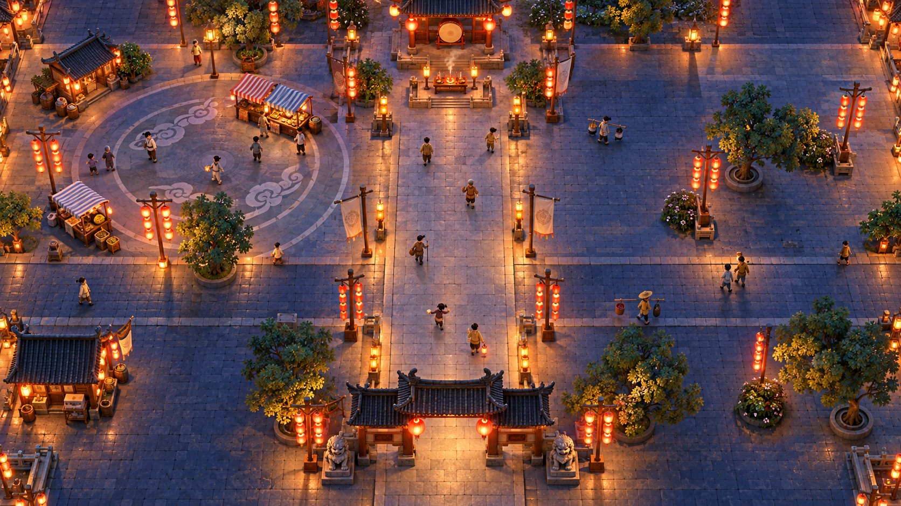
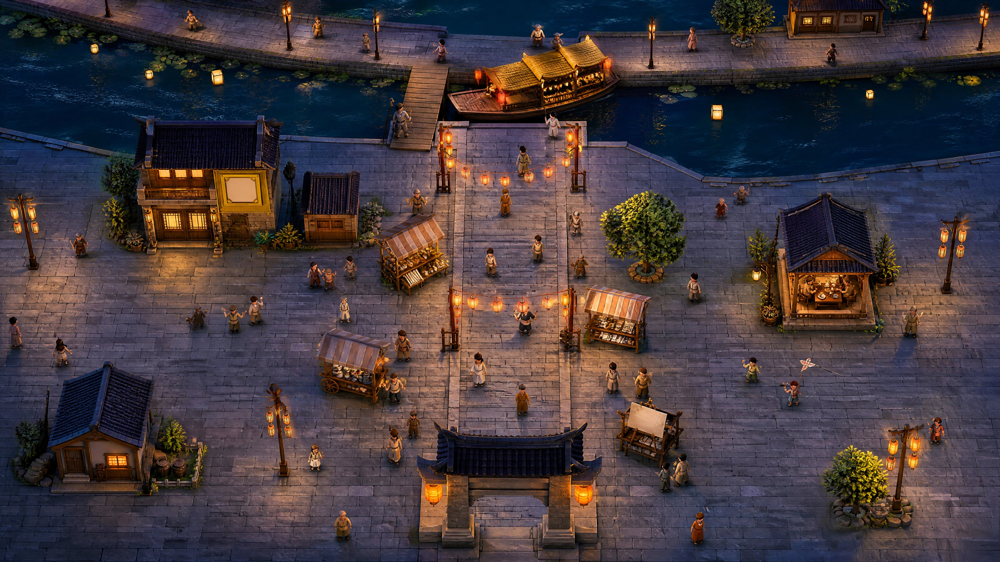
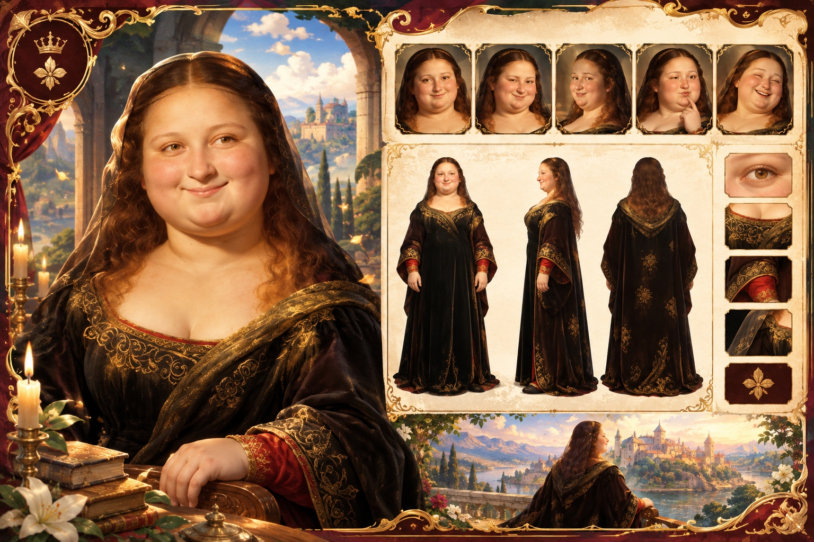

INTERACTIVE GAME / 完整作品图集
灯影古镇
在梦、福、诗、画四幕中探索古镇，寻得灵杰、解锁角色卡并集齐四印。这里完整呈现四关地图与四张角色详情卡，保留每一张图的完整画面。
四关地图
四段场景视频中的街景，分别对应一位灵杰。移动光晕探索，停留充能完成寻宝。
水乡元宵灯会 · 司梦 · 灯河锦囊
点击查看完整原图 ↗
山门庙会大街 · 司福 · 金绸额福
点击查看完整原图 ↗桃花溪月夜 · 司诗 · 醉步邀月
点击查看完整原图 ↗
字画古玩街 · 司画 · 油画之姿
点击查看完整原图 ↗四灵角色详情卡
梦鹿、神马、李白与萌莎的立绘、表情和设定细节。角色卡在游戏结算时解锁，点击图片可查看完整内容。
红贝雷帽与金丝圆镜，旗袍斗篷配中国结流苏；表情与正、侧、背设定。
点击查看完整原图 ↗白马红唐装与金绸，额点金印、飘带当风；表情与服饰设定。
点击查看完整原图 ↗墨镜、竹扇、白袍与洞洞鞋；醉步邀月的现代演绎及配饰细节。
点击查看完整原图 ↗
深裙金边与头纱，油画质感的画中人物；表情与鸢尾纹章细节。
点击查看完整原图 ↗从探索到集印
输入、判定和反馈共同组织游戏过程。
01 / 输入
MediaPipe 手势 / 鼠标双模式，I 键切换。
02 / 寻宝
约 1.5 秒停留充能，支持防抖与移开衰减。
03 / 识人
角色显影、台词配音与详情卡解锁。
04 / 合璧
四印收集、幸运转盘与结局视频。
Chrome / Edge 可体验。鼠标模式无需摄像头；手势模式需 HTTPS 或 localhost 及摄像头授权，画面本地推理。在线场景视频受网络加载影响；本地版下载解压后按仓库说明启动，可从硬盘读取媒体。